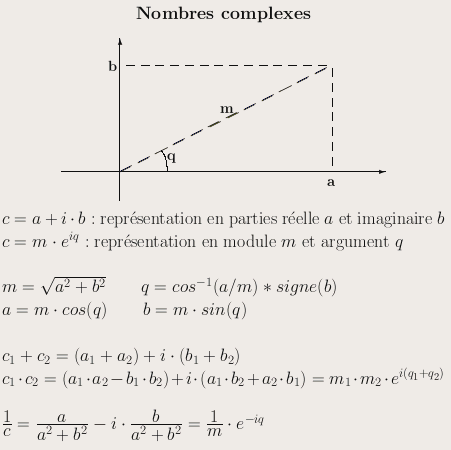

ACD1 - Canevas du TP 2 : Réalisation de types
En fin de TP, il faudra rendre une archive (seuls formats admis :
zip, tar ou tgz) contenant
uniquement le compte-rendu (formats odt ET
pdf) et les sources Java des classes réalisées,
y compris les tests. Ne pas rendre la documentation produite par
javadoc, ni les fichiers .class.
Attention à bien respecter les noms imposés par
l'énoncé, sinon les tests menés par l'enseignant
ne seront pas concluants.
Les fichiers rendus doivent pouvoir être compilés sans
erreur (commenter les parties de code défectueuses en cas de
doute).
Les méthodes doivent être testées au fur et
à mesure qu'elles sont développées. Pour cela,
on recommande de faire le premier accesseur tout de suite après
avoir fait le constructeur principal. Pour chacune
des classes, les tests seront placés dans un fichier à
part, par exemple TestAngle pour les méthodes de la
classe Angle.
- Au minimum, le compte-rendu devrait :
- - indiquer le thème principal du TP,
- - rappeler les notions de type, d'espace de valeurs
(composition, réduction) et d'opération,
illustrées sur des exemples du TP,
- - rappeler la notion de surchage, illustrée sur un
exemple du TP,
- - rappeler la notion de constructeur principal, illustrée
sur les exemples du TP,
- - justifier les choix des types retournés ou toute autre
particularité pertinente du développement.
Exercice 1 : Type Angle
Ecrire, tester et documenter
(javadoc + en-tête) un type Angle,
correctement encapsulé, à valeurs sur ]-π, π].
L'espace des valeurs du type doit être bien
contrôlé.
- Constructeurs :
- - un constructeur principal à partir d'une valeur
réelle (en radians),
- - un constructeur à partir d'une valeur entière
(en degrés),
- - un constructeur par recopie,
- Accesseurs :
- - une méthode de conversion en chaîne de
caractères,
- - une méthode enRadians qui retourne la valeur de
l'angle en radians,
- - une méthode enDegres qui retourne la valeur
arrondie à l'unité la plus proche de l'angle en
degrés, et telle que le résultat du test suivant
soit satisfait :
(new Angle ((new Angle (72)).enDegres ())).enDegres ()
== (new Angle (72)).enDegres ()
- - une méthode somme qui retourne la somme
avec un autre angle,
- - une méthode inverse qui retourne l'inverse
de l'angle (l'inverse de π/4 est -π/4).
- Mutateurs :
- - une méthode ajouter qui ajoute la valeur d'un
autre angle,
- - une méthode opposer qui remplace l'angle par
son opposé sur le cercle trigonométrique
(l'opposé de π/4 est -3π/4).
- NB : ces mutateurs ne doivent pas utiliser les constructeurs.
Exercice 2 : Type Complexe
En s'appuyant sur le type Angle précédent,
écrire, tester et documenter (javadoc) un type
Complexe représentant un nombre complexe c
par sa partie réelle a et sa partie imaginaire
b. Notation : c = a + i.b

- Constructeurs :
- - un constructeur principal à partir de deux valeurs
réelles pour les parties réelles et imaginaires,
- - un constructeur à partir d'un module et d'un argument,
- - un constructeur à partir d'une seule valeur réelle
(réel pur),
- - un constructeur à partir d'un angle (l'argument, le
module étant fixé à 1).
- Accesseurs :
- - une méthode de conversion en chaîne de
caractères,
- - une méthode composantes qui retourne la partie
réelle et la partie imaginaire,
- - une méthode module qui retourne le module,
- - une méthode argument qui retourne l'argument,
- - une méthode estReelPur qui teste si le complexe
est réel pur (à ε près),
- - une méthode estImaginairePur qui teste si le
complexe est imaginaire pur.
- - une méthode conjugue qui retourne le complexe
conjugué : a -i.b,
- - une méthode somme qui retourne la somme de
deux complexes : (a1 + a2) + i.(b1 + b2),
- - une méthode produit qui retourne le produit avec
un autre complexe :
(a1.a2 - b1.b2) + i (a1.b2 + a2.b1),
- - une méthode produit qui retourne le produit
avec un nombre réel;
- - une méthode inverse qui retourne l'inverse du
complexe : (a - i.b) / (a.a + b.b),
- Mutateurs :
- - une méthode ajouter qui ajoute la valeur d'un
autre complexe,
- - une méthode multiplier qui multiplie par un
autre complexe,
- - une méthode multiplier qui multiplie par un
nombre réel,
- - une méthode inverser qui remplace le complexe
par son inverse.
Exercice 3 : Refonte du type Complexe
Recopier tous les fichiers sources .java (y compris les
tests) dans un nouveau répertoire v2, puis
travailler dans ce répertoire v2.
Réécrire la classe Complexe.java en prenant
cette fois comme attributs un module et un argument.
En principe, il suffit de repartir de l'ancien fichier Java, de
changer les attributs et de rectifier le contenu des
méthodes. Les tests réalisés
précédemment doivent encore fonctionner.